Nina's Library Books
Dial A for Aunties

When Meddelin Chan ends up accidentally killing her blind date, her meddlesome mother calls for her even more meddlesome aunties to help get rid of the body. Unfortunately, a dead body proves to be a lot more challenging to dispose of than one might anticipate, especially when it is inadvertently shipped in a cake cooler to the over-the-top billionaire wedding Meddy, her Ma, and aunties are working at an island resort on the California coastline. It's the biggest job yet for the family wedding business—"Don't leave your big day to chance, leave it to the Chans!"—and nothing, not even an unsavory corpse, will get in the way of her auntie's perfect buttercream flowers.
But things go from inconvenient to downright torturous when Meddy's great college love—and biggest heartbreak—makes a surprise appearance amid the wedding chaos. Is it possible to escape murder charges, charm her ex back into her life, and pull off a stunning wedding all in one weekend?
What happens when you mix 1 (accidental) murder with 2 thousand wedding guests, and then toss in a possible curse on 3 generations of an immigrant Chinese-Indonesian family?
You get 4 meddling Asian aunties coming to the rescue!
The Lightning Thief
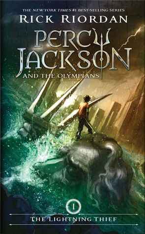Percy Jackson is about to be kicked out of boarding school...again. And that's the least of his troubles. Lately, mythological monsters and the gods of Mount Olympus seem to be walking straight out of the pages of Percy's Greek mythology textbook and into his life. And worse, he's angered a few of them. Zeus' master lightning bolt has been stolen, and Percy is the prime suspect.
Now Percy and his friends have just ten days to find and return Zeus' stolen property and bring peace to a warring Mount Olympus. But to succeed on his quest, Percy will have to do more than catch the true thief: he must come to terms with the father who abandoned him; solve the riddle of the Oracle, which warns him of betrayal by a friend; and unravel a treachery more powerful than the gods themselves.
The Sea of Monsters
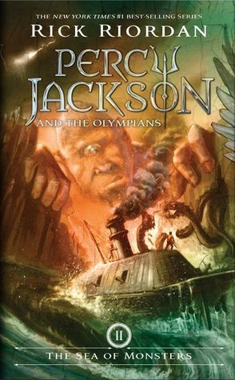Percy Jackson's seventh-grade year has been surprisingly quiet. Not a single monster has set foot on his New York prep-school campus. But when an innocent game of dodgeball among Percy and his classmates turns into a death match against an ugly gang of cannibal giants, things get... well, ugly. And the unexpected arrival of Percy's friend Annabeth brings more bad news: the magical borders that protect Camp Half-Blood have been poisoned by a mysterious enemy, and unless a cure is found, the only safe haven for demigods will be destroyed.
In this fresh, funny, and hugely anticipated follow up to The Lightning Thief, Percy and his friends must journey into the Sea of Monsters to save their beloved camp. But first, Percy will discover a stunning new secret about his family—one that makes him question whether being claimed as Poseidon's son is an honor or simply a cruel joke.
The Titan's Curse
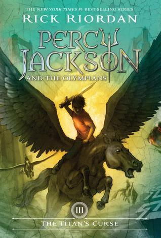When Percy Jackson receives an urgent distress call from his friend Grover, he immediately prepares for battle. He knows he'll need his powerful demigod allies at his side; his trusty bronze sword, Riptide; and... a ride from his mom.
The demigods race to the rescue to find that Grover has made an important discovery: two powerful half-bloods, whose parentage is unknown. But that's not all that awaits them. The Titan lord Kronos has set up a devious trap, and the young heroes have just fallen prey.
Hilarious and action-packed, this third adventure in the series finds Percy faced with his most dangerous challenge yet--the chilling prophecy of the Titan's curse.
The Battle of the Labyrinth
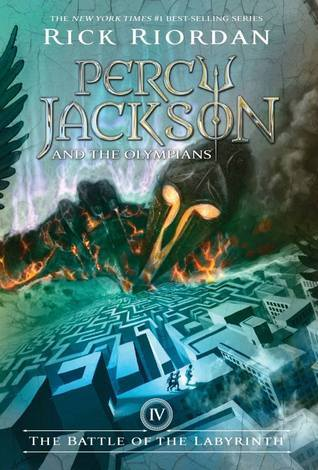Percy Jackson isn't expecting freshman orientation to be any fun. But when a mysterious mortal acquaintance appears at his potential new school, followed by demon cheerleaders, things quickly move from bad to worse.
In this fourth installment of the blockbuster series, time is running out as war between the Olympians and the evil Titan lord Kronos draws near. Even the safe haven of Camp Half-Blood grows more vulnerable by the minute as Kronos's army prepares to invade its once impenetrable borders. To stop the invasion, Percy and his demigod friends must set out on a quest through the Labyrinth - a sprawling underground world with stunning surprises at every turn.
The Last Olympian

All year the half-bloods have been preparing for battle against the Titans, knowing the odds of a victory are grim. Kronos's army is stronger than ever, and with every god and half-blood he recruits, the evil Titan's power only grows.
While the Olympians struggle to contain the rampaging monster Typhon, Kronos begins his advance on New York City, where Mount Olympus stands virtually unguarded. Now it's up to Percy Jackson and an army of young demigods to stop the Lord of Time.
In this momentous final book in the New York Times best-selling series, the long-awaited prophecy surrounding Percy's sixteenth birthday unfolds. And as the battle for Western civilization rages on the streets of Manhattan, Percy faces a terrifying suspicion that he may be fighting against his own fate.
Heartstopper: Volume One
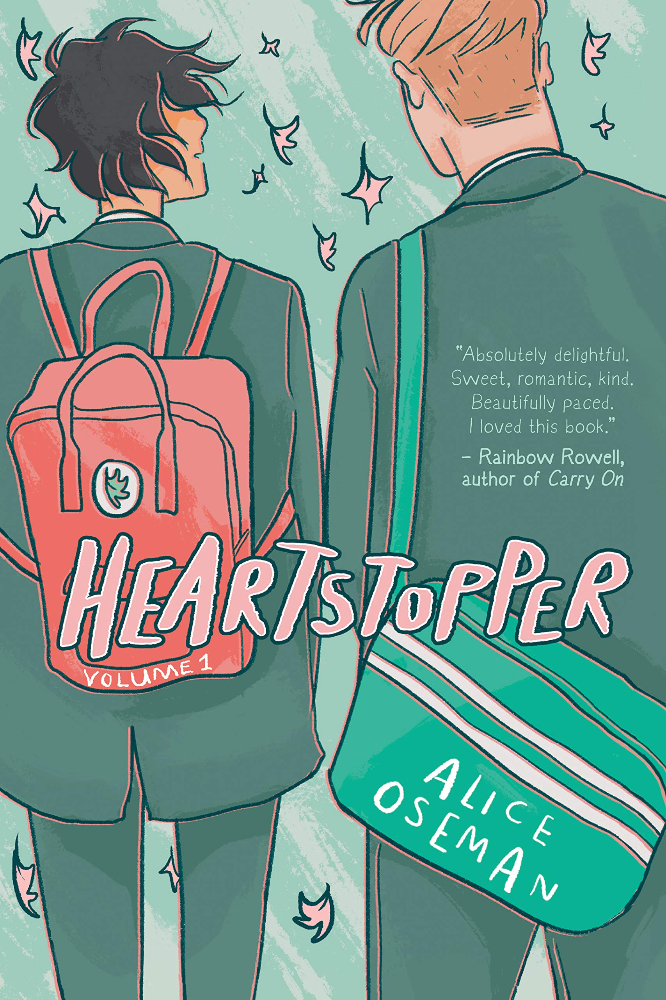Boy meets boy. Boys become friends. Boys fall in love. A sweet and charming coming-of-age story that explores friendship, love, and coming out.
Shy and softhearted Charlie Spring sits next to rugby player Nick Nelson in class one morning. A warm and intimate friendship follows, and that soon develops into something more for Charlie, who doesn't think he has a chance.
But Nick is struggling with feelings of his own, and as the two grow closer and take on the ups and downs of high school, they come to understand the surprising and delightful ways in which love works.
Heartstopper: Volume Two

Nick and Charlie are best friends. Nick knows Charlie's gay, and Charlie is sure that Nick isn't.
But love works in surprising ways, and Nick is discovering all kinds of things about his friends, his family... and himself.
Heartstopper: Volume Three

Charlie didn't think Nick could ever like him back, but now they're officially boyfriends. Nick has even found the courage to come out to his mom.
But coming out isn't something that happens just once, and Nick and Charlie try to figure out when to tell their friends that they're dating. Not being out to their classmates gets even harder during a school trip to Paris. As Nick and Charlie's feelings get more serious, they'll need each other more than ever.
Heartstopper: Volume Four

Charlie and Nick's relationship has been going really well, and Charlie thinks he's ready to say those three little words: I love you.
How to Overcome Anxiety

Las batallas en el desierto
Historia de un amor imposible, narración de un terror cotidiano que los protagonistas preferirían creer que se trata de algo fantasmagórico, Las batallas en el desierto es una magistral novela breve que involucra otros aspectos como la corrupción social y política, el inicio del México moderno y la desaparición del país tradicional, el testimonio de las transformaciones de nuestras vidas y nuestra historia, y el rescate de las memorias individuales y colectivas de una ciudad a la que José Emilio Pacheco ama profundamente, pero recrea sin nostalgia y denuncia de manera implacable.
Desde su aparición esta novela corta, traducida al inglés, francés, alemán, italiano, ruso, japonés y griego, y publicada en otras partes del mundo hispano, asombró por su aparente sencillez y la estructura compleja que tiende lazos para una variedad de lecturas múltiples y diferentes, y para una complicidad que hermana para siempre al lector con el autor.
People We Meet on Vacation

Two best friends. Ten summer trips. One last chance to fall in love.
Poppy and Alex. Alex and Poppy. They have nothing in common. She's a wild child; he wears khakis. She has insatiable wanderlust; he prefers to stay home with a book. And somehow, ever since a fateful car share home from college many years ago, they are the very best of friends. For most of the year they live far apart—she's in New York City, and he's in their small hometown—but every summer, for a decade, they have taken one glorious week of vacation together.
Until two years ago, when they ruined everything. They haven't spoken since.
Poppy has everything she should want, but she's stuck in a rut. When someone asks when she was last truly happy, she knows, without a doubt, it was on that ill-fated, final trip with Alex. And so, she decides to convince her best friend to take one more vacation together—lay everything on the table, make it all right. Miraculously, he agrees.
Now she has a week to fix everything. If only she can get around the one big truth that has always stood quietly in the middle of their seemingly perfect relationship. What could possibly go wrong?
Nick and Charlie

Absence makes the heart grow fonder, right?
CHARLIE: “I have been going out with Nick Nelson for two years. He likes rugby, Formula 1, dogs, the Marvel universe, the sound felt-tips make on paper, rain and drawing on shoes. He also likes me.”
NICK: “Things me and Charlie Spring do together include: Watch films. Sit in the same room on different laptops. Text each other from different rooms. Make out. Make food. Make drinks. Get drunk. Talk. Argue. Laugh. Maybe we're kind of boring. But that's fine with us.”
Everyone knows that Nick and Charlie are the perfect couple - that they're inseparable. But now Nick is leaving for university, and Charlie will be left behind at Sixth Form. Everyone's asking if they're staying together, which is a stupid question - they're 'Nick and Charlie' for God's sake!
But as the time to say goodbye gets inevitably closer, both Nick and Charlie question whether their love is strong enough to survive being apart. Or are they delaying the inevitable? Because everyone knows that first loves rarely last forever...
The Seven Husbands of Evelyn Hugo
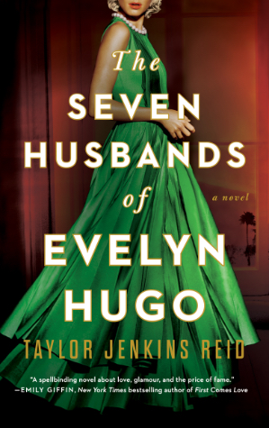Aging and reclusive Hollywood movie icon Evelyn Hugo is finally ready to tell the truth about her glamorous and scandalous life. But when she chooses unknown magazine reporter Monique Grant for the job, no one is more astounded than Monique herself. Why her? Why now?
Transcendent Kingdom

Yaa Gyasi's stunning follow-up to her acclaimed national best seller Homegoing is a powerful, raw, intimate, deeply layered novel about a Ghanaian family in Alabama.
Gifty is a fifth-year candidate in neuroscience at Stanford School of Medicine studying reward-seeking behavior in mice and the neural circuits of depression and addiction. Her brother, Nana, was a gifted high school athlete who died of a heroin overdose after a knee injury left him hooked on OxyContin. Her suicidal mother is living in her bed. Gifty is determined to discover the scientific basis for the suffering she sees all around her.
But even as she turns to the hard sciences to unlock the mystery of her family's loss, she finds herself hungering for her childhood faith and grappling with the evangelical church in which she was raised, whose promise of salvation remains as tantalizing as it is elusive. Transcendent Kingdom is a deeply moving portrait of a family of Ghanaian immigrants ravaged by depression and addiction and grief--a novel about faith, science, religion, love. Exquisitely written, emotionally searing, this is an exceptionally powerful follow-up to Gyasi's phenomenal debut.
Anxious People

Looking at real estate isn't usually a life-or-death situation, but an apartment open house becomes just that when a failed bank robber bursts in and takes a group of strangers hostage. The captives include a recently retired couple who relentlessly hunt down fixer-uppers to avoid the painful truth that they can't fix their own marriage. There's a wealthy bank director who has been too busy to care about anyone else and a young couple who are about to have their first child but can't seem to agree on anything. Add to the mix an eighty-seven-year-old woman who has lived long enough not to be afraid of someone waving a gun in her face, a flustered but still-ready-to-make-a-deal real estate agent, and a mystery man who has locked himself in the apartment's only bathroom, and you've got the worst group of hostages in the world.
Each of them carries a lifetime of grievances, hurts, secrets, and passions that are ready to boil over. None of them is entirely who they appear to be. And all of them—the bank robber included—desperately crave some sort of rescue. As the authorities and the media surround the premises, these reluctant allies will reveal surprising truths about themselves and set in motion a chain of events so unexpected that even they can hardly explain what happens next.
They Both Die at the End

On September 5, a little after midnight, Death-Cast calls Mateo Torrez and Rufus Emeterio to give them some bad news: They're going to die today.
Mateo and Rufus are total strangers, but, for different reasons, they're both looking to make a new friend on their End Day. The good news: There's an app for that. It's called the Last Friend, and through it, Rufus and Mateo are about to meet up for one last great adventure—to live a lifetime in a single day.
La Hija Del Curandero
Esta es la entrañable historia de dos generaciones de mujeres unidas por la herencia de la sangre y las cualidades inefables del amor.
La anciana LuLing comienza a escribir todo lo que recuerda de su infancia y juventud en China. Una vida azarosa de leyendas, fantasmas, maldiciones y amores. Su hija Ruth, una escritora de libros de encargo sumida en problemas existenciales, empieza a sospechar que su madre está muy enferma. Entonces descubre los escritos de LuLing, y se abre ante ella un pasado rico y revelador. Las páginas caligrafiadas de la anciana encierran una verdad íntima que nunca fue capaz de contar a su hija, pero que al mismo tiempo desea que esta no olvide. En el transcurso de un año, madre e hija reconcilian sus historias y conjuran el pesar de sus sueños rotos.
El camino del arquero
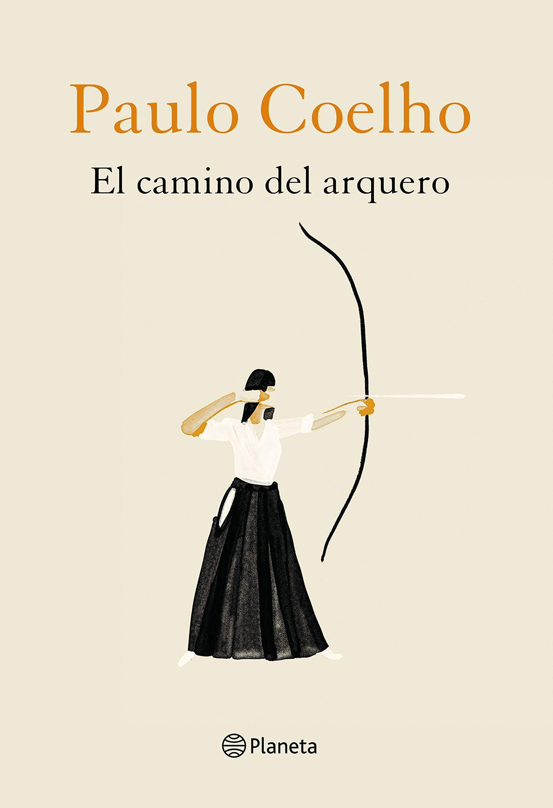Tetsuya es el mejor arquero del país, pero vive retirado en un valle remoto y trabaja de humilde carpintero. Un día, otro arquero que viene de lejos le desafía. Tetsuya acepta el reto y le demuestra al extranjero que para vencer tanto con el arco como en la vida no basta la habilidad técnica. Un joven del pueblo le insiste para que le transmita su saber. El maestro le advierte: puede enseñarle las reglas necesarias, pero es él quien deberá trabajar sobre sí mismo. Es así como Tetsuya empieza a enseñar a su nuevo discípulo el misterioso «camino del arquero», el recorrido de toda una vida.
Normal People

At school Connell and Marianne pretend not to know each other. He's popular and well-adjusted, star of the school football team, while she is lonely, proud, and intensely private. But when Connell comes to pick his mother up from her job at Marianne's house, a strange and indelible connection grows between the two teenagers--one they are determined to conceal.
A year later, they're both studying at Trinity College in Dublin. Marianne has found her feet in a new social world while Connell hangs at the sidelines, shy and uncertain. Throughout their years at university, Marianne and Connell circle one another, straying toward other people and possibilities but always magnetically, irresistibly drawn back together. And as she veers into self-destruction and he begins to search for meaning elsewhere, each must confront how far they are willing to go to save the other.
Swing

In this YA novel in verse from bestselling authors Kwame Alexander and Mary Rand Hess (Solo), which Kirkus called “lively, moving, and heartfelt” in a starred review, Noah and Walt just want to leave their geek days behind and find “cool,” but in the process discover a lot about first loves, friendship, and embracing life... as well as why Black Lives Matter is so important for all. Best friends Noah and Walt are far from popular, but Walt is convinced junior year is their year, and he has a plan that includes wooing the girls of their dreams and becoming amazing athletes. Never mind he and Noah failed to make their baseball team yet again, and Noah's crush since third grade, Sam, has him firmly in the friend zone. While Walt focuses on his program of jazz, podcasts, batting cages, and a “Hug Life” mentality, Noah feels stuck in status quo … until he stumbles on a stash of old love letters. Each one contains words Noah's always wanted to say to Sam, and he begins secretly creating artwork using the lines that speak his heart. But when his art becomes public, Noah has a decision to continue his life in the dugout and possibly lose the girl forever, or take a swing and finally speak out. At the same time, American flags are being left around town. While some think it's a harmless prank and others see it as a form of protest, Noah can't shake the feeling something bigger is happening to his community. Especially after he witnesses events that hint divides and prejudices run deeper than he realized. As the personal and social tensions increase around them, Noah and Walt must decide what is really important when it comes to love, friendship, sacrifice, and fate.
The Marseille Tarot Revealed: A Complete Guide to Symbolism, Meanings & Methods

Discover the Marseille Tarot! This book explores the fascinating history of this often misunderstood deck and provides practical insights into using it for readings on a variety of questions. Yoav Ben-Dov shares the meaning of the classic Marseille symbols and specific reading techniques that help you tap into your own intuition. The Marseille Tarot Revealed explains everything you need to know to start or deepen your Marseille Tarot practice, including:
Classic Marseille Decks New Marseille Decks The French School The English School Tarot and the New Age Handling the Cards Shuffling the Deck How to Read The Meaning of Cards Basic Spreads Reverse Cards The Symbolic Language
The Lost Hero

Jason has a problem. He doesn't remember anything before waking up on a school bus holding hands with a girl. Apparently she's his girlfriend Piper, his best friend is a kid named Leo, and they're all students in the Wilderness School, a boarding school for “bad kids.” What he did to end up here, Jason has no idea―except that everything seems very wrong.
Piper has a secret. Her father has been missing for three days, and her vivid nightmares reveal that he's in terrible danger. Now her boyfriend doesn't recognize her, and when a freak storm and strange creatures attack during a school field trip, she, Jason, and Leo are whisked away to someplace called Camp Half-Blood. What is going on?
Leo has a way with tools. His new cabin at Camp Half-Blood is filled with them. Seriously, the place beats Wilderness School hands down, with its weapons training, monsters, and fine-looking girls. What's troubling is the curse everyone keeps talking about, and that a camper's gone missing. Weirdest of all, his bunkmates insist they are all―including Leo―related to a god.
Rick Riordan, the best-selling author of the Percy Jackson series, pumps up the action and suspense in The Lost Hero, the first book in The Heroes of Olympus series. Fans of demi-gods, prophesies, and quests will be left breathless--and panting for Book Two.
One Last Stop

For cynical twenty-three-year-old August, moving to New York City is supposed to prove her right: that things like magic and cinematic love stories don't exist, and the only smart way to go through life is alone. She can't imagine how waiting tables at a 24-hour pancake diner and moving in with too many weird roommates could possibly change that. And there's certainly no chance of her subway commute being anything more than a daily trudge through boredom and electrical failures.
But then, there's this gorgeous girl on the train.
Jane. Dazzling, charming, mysterious, impossible Jane. Jane with her rough edges and swoopy hair and soft smile, showing up in a leather jacket to save August's day when she needed it most. August's subway crush becomes the best part of her day, but pretty soon, she discovers there's one big problem: Jane doesn't just look like an old school punk rocker. She's literally displaced in time from the 1970s, and August is going to have to use everything she tried to leave in her own past to help her. Maybe it's time to start believing in some things, after all.
Casey McQuiston's One Last Stop is a magical, sexy, big-hearted romance where the impossible becomes possible as August does everything in her power to save the girl lost in time.
Red, White & Royal Blue
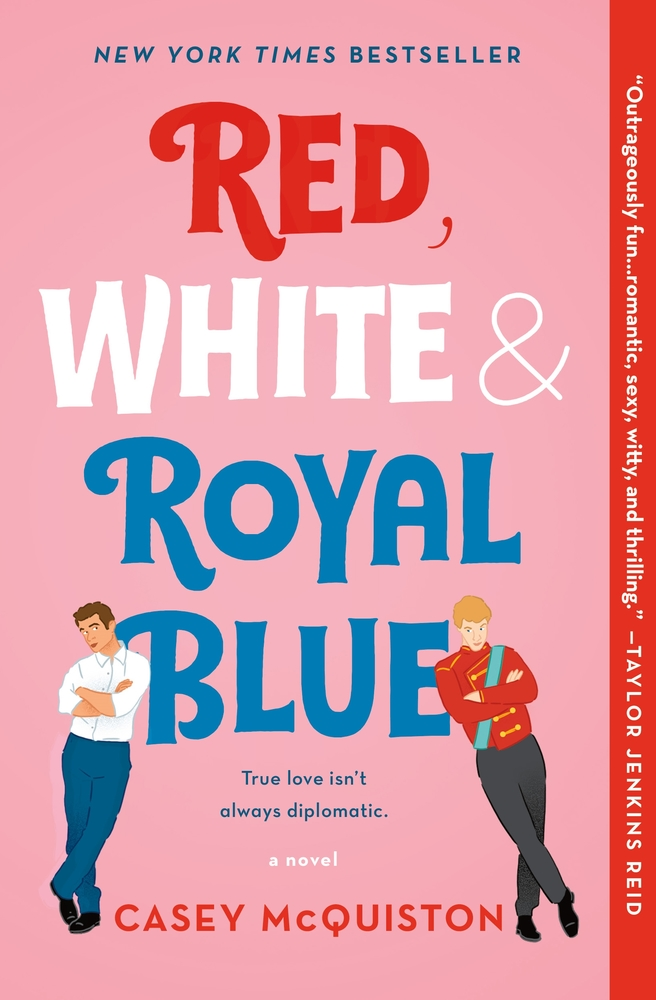What happens when America's First Son falls in love with the Prince of Wales?
When his mother became President, Alex Claremont-Diaz was promptly cast as the American equivalent of a young royal. Handsome, charismatic, genius—his image is pure millennial-marketing gold for the White House. There's only one problem: Alex has a beef with the actual prince, Henry, across the pond. And when the tabloids get hold of a photo involving an Alex-Henry altercation, U.S./British relations take a turn for the worse.
Heads of family, state, and other handlers devise a plan for damage control: staging a truce between the two rivals. What at first begins as a fake, Instragramable friendship grows deeper, and more dangerous, than either Alex or Henry could have imagined. Soon Alex finds himself hurtling into a secret romance with a surprisingly unstuffy Henry that could derail the campaign and upend two nations and begs the question: Can love save the world after all? Where do we find the courage, and the power, to be the people we are meant to be? And how can we learn to let our true colors shine through? Casey McQuiston's Red, White & Royal Blue proves: true love isn't always diplomatic.
Aristotle and Dante Discover the Secrets of the Universe

Dante can swim. Ari can't. Dante is articulate and self-assured. Ari has a hard time with words and suffers from self-doubt. Dante gets lost in poetry and art. Ari gets lost in thoughts of his older brother who is in prison. Dante is fair skinned. Ari's features are much darker. It seems that a boy like Dante, with his open and unique perspective on life, would be the last person to break down the walls that Ari has built around himself.
But against all odds, when Ari and Dante meet, they develop a special bond that will teach them the most important truths of their lives, and help define the people they want to be. But there are big hurdles in their way, and only by believing in each other―and the power of their friendship―can Ari and Dante emerge stronger on the other side.
Today Tonight Tomorrow

Today, she hates him.
It's the last day of senior year. Rowan Roth and Neil McNair have been bitter rivals for all of high school, clashing on test scores, student council elections, and even gym class pull-up contests. While Rowan, who secretly wants to write romance novels, is anxious about the future, she'd love to beat her infuriating nemesis one last time.
Tonight, she puts up with him.
When Neil is named valedictorian, Rowan has only one chance at victory: Howl, a senior class game that takes them all over Seattle, a farewell tour of the city she loves. But after learning a group of seniors is out to get them, she and Neil reluctantly decide to team up until they're the last players left—and then they'll destroy each other.
As Rowan spends more time with Neil, she realizes he's much more than the awkward linguistics nerd she's sparred with for the past four years. And, perhaps, this boy she claims to despise might actually be the boy of her dreams.
Tomorrow… maybe she's already fallen for him.
The Hating Game meets Booksmart by way of Morgan Matson in this unforgettable romantic comedy about two rival overachievers whose relationship completely transforms over the course of twenty-four hours.
Tus Zonas Erroneas
El cielo es el limite: Un libro definitivo para el individuo
You can become the person you choose to be. Read this book and change your life now. Are you ready to be a No-Limit Person?
Dead Dead Girls
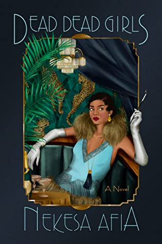Harlem, 1926. Young Black women like Louise Lloyd are ending up dead.
Following a harrowing kidnapping ordeal when she was in her teens, Louise is doing everything she can to maintain a normal life. She's succeeding, too. She spends her days working at Maggie's Café and her nights at the Zodiac, Harlem's hottest speakeasy. Louise's friends, especially her girlfriend, Rosa Maria Moreno, might say she's running from her past and the notoriety that still stalks her, but don't tell her that.
When a girl turns up dead in front of the café, Louise is forced to confront something she's been trying to ignore—two other local Black girls have been murdered in the past few weeks. After an altercation with a police officer gets her arrested, Louise is given an ultimatum: She can either help solve the case or wind up in a jail cell. Louise has no choice but to investigate and soon finds herself toe-to-toe with a murderous mastermind hell-bent on taking more lives, maybe even her own...
Playing the Palace
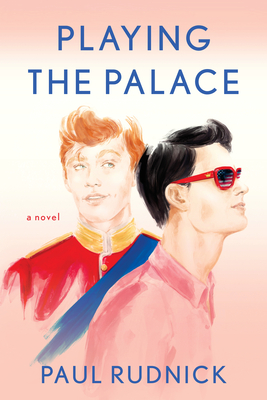THEIR LOVE STORY CAPTIVATED THE WORLD…THE CROWN PRINCE AND THAT GUY FROM NEW YORK
When a lonely American event planner starts dating the gay Prince of Wales, a royal uproar ensues: is it true love or the ultimate meme? Find out in this hilarious romantic comedy.
After having his heart trampled on by his cheating ex, Carter Ogden is afraid love just isn't in the cards for him. He still holds out hope in a tiny corner of his heart, but even in his wildest dreams he never thought he'd meet the Crown Prince of England, much less do a lot more with him. Yes, growing up he'd fantasized about the handsome, openly gay Prince Edgar, but who hadn't? When they meet by chance at an event Carter's boss is organizing, Carter's sure he imagined all that sizzling chemistry. Or was it mutual?
This unlikely but meant-to-be romance sets off media fireworks on both sides of the Atlantic. With everyone having an opinion on their relationship and the intense pressure of being constantly in the spotlight, Carter finds ferocious obstacles to his Happily Ever After, including the tenacious disapproval of the Queen of England. Carter and Prince Edgar fight for a happy ending to equal their glorious international beginning. It's a match made on Valentine's Day and in tabloid heaven.
The Charm Offensive
Dev Deshpande has always believed in fairy tales. So it's no wonder then that he's spent his career crafting them on the long-running reality dating show Ever After. As the most successful producer in the franchise's history, Dev always scripts the perfect love story for his contestants, even as his own love life crashes and burns. But then the show casts disgraced tech wunderkind Charlie Winshaw as its star.
Charlie is far from the romantic Prince Charming Ever After expects. He doesn't believe in true love, and only agreed to the show as a last-ditch effort to rehabilitate his image. In front of the cameras, he's a stiff, anxious mess with no idea how to date twenty women on national television. Behind the scenes, he's cold, awkward, and emotionally closed-off.
As Dev fights to get Charlie to connect with the contestants on a whirlwind, worldwide tour, they begin to open up to each other, and Charlie realizes he has better chemistry with Dev than with any of his female co-stars. But even reality TV has a script, and in order to find to happily ever after, they'll have to reconsider whose love story gets told.
In this witty and heartwarming romantic comedy—reminiscent of Red, White & Royal Blue and One to Watch—an awkward tech wunderkind on a reality dating show goes off-script when sparks fly with his producer.
Circe
In the house of Helios, god of the sun and mightiest of the Titans, a daughter is born. But Circe is a strange child--not powerful, like her father, nor viciously alluring like her mother. Turning to the world of mortals for companionship, she discovers that she does possess power--the power of witchcraft, which can transform rivals into monsters and menace the gods themselves.
Threatened, Zeus banishes her to a deserted island, where she hones her occult craft, tames wild beasts and crosses paths with many of the most famous figures in all of mythology, including the Minotaur, Daedalus and his doomed son Icarus, the murderous Medea, and, of course, wily Odysseus.
But there is danger, too, for a woman who stands alone, and Circe unwittingly draws the wrath of both men and gods, ultimately finding herself pitted against one of the most terrifying and vengeful of the Olympians. To protect what she loves most, Circe must summon all her strength and choose, once and for all, whether she belongs with the gods she is born from, or the mortals she has come to love.
With unforgettably vivid characters, mesmerizing language and page-turning suspense, Circe is a triumph of storytelling, an intoxicating epic of family rivalry, palace intrigue, love and loss, as well as a celebration of indomitable female strength in a man's world.
The Song of Achilles
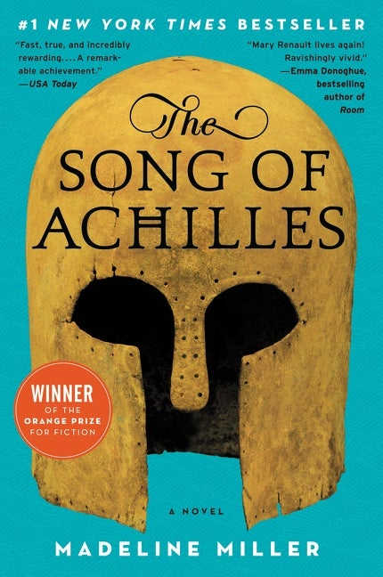A thrilling, profoundly moving, and utterly unique retelling of the legend of Achilles and the Trojan War from the bestselling author of Circe.
A tale of gods, kings, immortal fame, and the human heart, The Song of Achilles is a dazzling literary feat that brilliantly reimagines Homer's enduring masterwork, The Iliad. An action-packed adventure, an epic love story, a marvelously conceived and executed page-turner, Miller's monumental debut novel has already earned resounding acclaim from some of contemporary fiction's brightest lights—and fans of Mary Renault, Bernard Cornwell, Steven Pressfield, and Colleen McCullough's Masters of Rome series will delight in this unforgettable journey back to ancient Greece in the Age of Heroes.
The Book of Weird and Unusual Trivia
Contents:
The natural world
History and civilization
Business and commerce
Arts, entertainment, and culture
Sports, games, and adventure
The human body
Wars and conflicts
Law and disorder
Beyond natural
The Book of Bizarre Truths
The Book of Bizarre Truths is a 704-page collection of answers to hundreds of provocative questions covering a vast range of topics, from the strange to the sublime.
Includes urban legends, old wives tales, misattributed quotes, and corrected so-called facts and trivia that have gained authenticity despite less-than-reliable sources.
Topics covered include the animal kingdom, health, origins, traditions, science, history, geography, sports, people, and food.
More than 200 questions that are answered, including:
Do cows cause global warming?
How many ants make a full meal for an anteater?
How late is fashionably late?
What s the smelliest thing on the planet?
Do woodpeckers get headaches?
The Book of Bizarre Truths is for readers who expect to be informed, entertained, and humored.
The Book of Criminal Minds: Forgeries, Robberies, Heists, Crimes of Passion, Murders, Money Laundering, Con Artistry, and More
A perfect gift for the true crime buff in your life, this book contains more than 300 absorbing stories about true crime.
The Book of The Truth Behind the Story
The Book of The Truth Behind the Story is f illed with practical and particular information on questionable rumors, mysterious happenings, and events.
The Book of Unsolved Mysteries
The Book of Unsolved Mysteries features more than 230 fascinating true stories across eleven chapters.
How to Read Tarot: A Practical Guide
Learn how to anticipate the future and shape the present in this new guide about reading Tarot cards.
For centuries, mystics and clairvoyants have used Tarot cards to predict the future. But no special power is needed to read the cards with How to Read Tarot. This easy-to-follow guide can show you how to interpret and understand the meaning behind Tarot cards. You'll find everything from explanations of each card in the deck to using the Tarot for personal gain. The truth is in the cards—that is, if you know where to look.
Beginner's Guide to Tarot
An original, complete book and card set designed to introduce the beginner into the intricacies of the Tarot
The tarot is an ancient art, dating back at least to the mid-fifteenth century, and reading the tarot is a skill that can be learned and ultimately mastered. While there are many books and decks for the advanced tarot enthusiast, there is very little for the less advanced. Now there is The Beginner's Guide to the Tarot, a book and card set designed specifically for the novice. In the fully illustrated, 192 page book, noted tarot expert Juliet Sharman-Burke leads the reader through the cards and suits, the Minor and Major Arcana, and the major layouts for the compete 78 card deck. The book is packed with a newly designed and illustrated deck which draws upon both traditional and modern tarot iconography and is rendered in a clear, distinctive style.
Tarot - the Open Reading

The object of this book is threefold. First, a general introduction to the Tarot cards. Second, a practical guide to the "Open Reading" method, focusing on the look and feel of the cards rather than on fixed interpretations. Third, a detailed handbook for the classic version of the Tarot deck, the Tarot de Marseille. Whether you are a novice or an experienced Tarot reader, and whatever deck or reading method you are now using, this book is for you.
Faker

Emmie Echavarre is a professional faker. She has to be to survive as one of the few female employees at Nuts & Bolts, a power tool company staffed predominantly by gruff, burly men. From nine to five, Monday through Friday, she's tough as nails--the complete opposite of her easy-going real self.
One thing she doesn't have to fake? Her disdain for coworker Tate Rasmussen. Tate has been hostile to her since the day they met. Emmie's friendly greetings and repeated attempts to get to know him failed to garner anything more than scowls and terse one-word answers. Too bad she can't stop staring at his Thor-like biceps...
When Emmie and Tate are forced to work together on a charity construction project, things get...heated. Emmie's beginning to see that beneath Tate's chiseled exterior lies a soft heart, but it will take more than a few kind words to erase the past and convince her that what they have is real.
Conventionally Yours
When two "big name fans" go head-to-head at a convention, love isn't the only thing at stake.
Charming, charismatic, and effortlessly popular, Conrad Stewart seems to have it all…but in reality, he's scrambling to keep his life from tumbling out of control.
Brilliant, guarded, and endlessly driven, Alden Roth may as well be the poster boy for perfection…but even he can't help but feel a little broken inside.
When these mortal enemies are stuck together on a cross-country road trip to the biggest fan convention of their lives, their infamous rivalry takes a backseat as an unexpected connection is forged. Yet each has a reason why they have to win the upcoming Odyssey gaming tournament and neither is willing to let emotion get in the way—even if it means giving up their one chance at something truly magical.
The Unhoneymooners
Olive Torres is used to being the unlucky twin: from inexplicable mishaps to a recent layoff, her life seems to be almost comically jinxed. By contrast, her sister, Ami, is an eternal champion... she even managed to finance her entire wedding by winning a slew of contests. Unfortunately for Olive, the only thing worse than constant bad luck is having to spend the wedding day with the best man (and her nemesis), Ethan Thomas.
Olive braces herself for wedding hell, determined to put on a brave face, but when the entire wedding party gets food poisoning, the only people who aren't affected are Olive and Ethan. Suddenly there's a free honeymoon up for grabs, and Olive will be damned if Ethan gets to enjoy paradise solo.
Agreeing to a temporary truce, the pair head for Maui. After all, ten days of bliss are worth having to assume the role of loving newlyweds, right? But the weird thing is... Olive doesn't mind playing pretend. In fact, the more she pretends to be the luckiest woman alive, the more it feels like she might be.
It Ends with Us
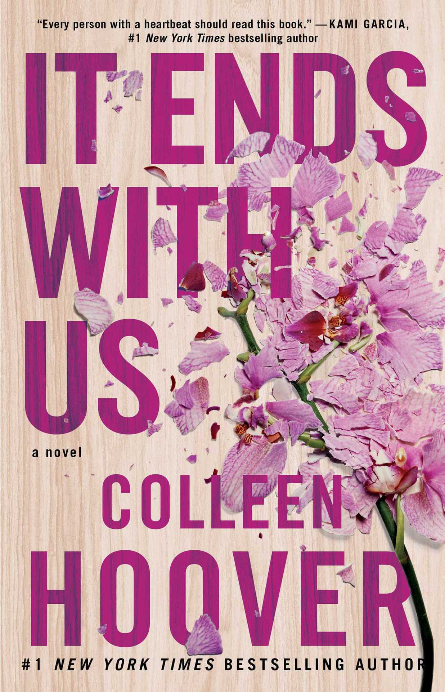Sometimes it is the one who loves you who hurts you the most.
Lily hasn't always had it easy, but that's never stopped her from working hard for the life she wants. She's come a long way from the small town in Maine where she grew up — she graduated from college, moved to Boston, and started her own business. So when she feels a spark with a gorgeous neurosurgeon named Ryle Kincaid, everything in Lily's life suddenly seems almost too good to be true.
Ryle is assertive, stubborn, maybe even a little arrogant. He's also sensitive, brilliant, and has a total soft spot for Lily. And the way he looks in scrubs certainly doesn't hurt. Lily can't get him out of her head. But Ryle's complete aversion to relationships is disturbing. Even as Lily finds herself becoming the exception to his “no dating” rule, she can't help but wonder what made him that way in the first place.
As questions about her new relationship overwhelm her, so do thoughts of Atlas Corrigan — her first love and a link to the past she left behind. He was her kindred spirit, her protector. When Atlas suddenly reappears, everything Lily has built with Ryle is threatened.
Maus: A Survivor's Tale: My Father Bleeds History

Maus is the story of Vladek Spiegelman, a Jewish survivor of Hitler's Europe, and his son, a cartoonist who tries to come to terms with his father, his father's terrifying story, and History itself. Its form, the cartoon, succeeds perfectly in shocking us out of any lingering sense of familiarity with the events described, approaching, as it does, the unspeakable through the diminutive. It is, as the New York Times Book Review has commented, "a remarkable feat of documentary detail and novelistic vividness...an unfolding literary event."
Moving back and forth from Poland to Rego Park, New York, Maus tells two powerful stories: the first is Spiegelman's father's account of how he and his wife survived Hitler's Europe, a harrowing tale filled with countless brushes with death, improbable escapes, and the terror of confinement and betrayal. The second is the author's tortured relationship with his aging father as they try to lead a normal life of minor arguments and passing visits against a backdrop of history too large to pacify. At all levels, this is the ultimate survivor's tale - and that, too, of the children who somehow survive even the survivors.
Part I of Maus takes Spiegelman's parents to the gates of Auschwitz and him to the edge of despair. Put aside all your preconceptions. These cats and mice are not Tom and Jerry, but something quite different. This is a new kind of literature.
Maus II: A Survivor's Tale: And Here My Troubles Began
Acclaimed as a quiet triumph and a brutally moving work of art, the first volume of Art Spieglman's Maus introduced readers to Vladek Spiegleman, a Jewish survivor of Hitler's Europe, and his son, a cartoonist trying to come to terms with his father, his father's terrifying story, and History itself. Its form, the cartoon (the Nazis are cats, the Jews mice), succeeds perfectly in shocking us out of any lingering sense of familiararity with the events described, approaching, as it does, the unspeakable through the diminutive.
This second volume, subtitled And Here My Troubles Began, moves us from the barracks of Auschwitz to the bungalows of the Catskills. Genuinely tragic and comic by turns, it attains a complexity of theme and a precision of thought new to comics and rare in any medium. Maus ties together two powerful stories: Vladek's harrowing tale of survival against all odds, delineating the paradox of daily life in the death camps, and the author's account of his tortured relationship with his aging father. At every level this is the ultimate survivor's tale - and that too of the children who somehow survive even the survivors.
The Vanishing Half
The Vignes twin sisters will always be identical. But after growing up together in a small, southern black community and running away at age sixteen, it's not just the shape of their daily lives that is different as adults, it's everything: their families, their communities, their racial identities. Many years later, one sister lives with her black daughter in the same southern town she once tried to escape. The other secretly passes for white, and her white husband knows nothing of her past. Still, even separated by so many miles and just as many lies, the fates of the twins remain intertwined. What will happen to the next generation, when their own daughters' storylines intersect?
Weaving together multiple strands and generations of this family, from the Deep South to California, from the 1950s to the 1990s, Brit Bennett produces a story that is at once a riveting, emotional family story and a brilliant exploration of the American history of "passing." Looking well beyond issues of race, The Vanishing Half considers the lasting influence of the past as it shapes a person's decisions, desires, and expectations, and explores some of the multiple reasons and realms in which people sometimes feel pulled to live as something other than their origins.
We Came, We Saw, We Left: A Family Gap Year
What would happen if you quit your life for a year? In a pre-COVID-19 world, the Wheelan family decided to find out; leaving behind work, school, and even the family dogs to travel the world on a modest budget. Equal parts "how-to" and "how-not-to"—and with an eye toward a world emerging from a pandemic—We Came, We Saw, We Left is the insightful and often hilarious account of one family's gap-year experiment.
Wheelan paints a picture of adventure and connectivity, juggling themes of local politics, global economics, and family dynamics while exploring answers to questions like: How do you sneak out of a Peruvian town that has been barricaded by the local army? And where can you get treatment for a flesh-eating bacteria your daughter picked up two continents ago? From Colombia to Cambodia, We Came, We Saw, We Left chronicles nine months across six continents with three teenagers. What could go wrong?
Suicide Notes

Fifteen-year-old Jeff wakes up on New Year's Day to find himself in the hospital—specifically, in the psychiatric ward. Despite the bandages on his wrists, he's positive this is all some huge mistake. Jeff is perfectly fine, perfectly normal; not like the other kids in the hospital with him. But over the course of the next forty-five days, Jeff begins to understand why he ended up here—and realizes he has more in common with the other kids than he thought.
Only Mostly Devastated
A Junior Library Guild Gold Standard Selection
“Only Mostly Devastated is the kind of book I wish existed when my kids were younger—a charming, funny, laugh-out-loud teen romance that reminds all readers love comes in a multitude of flavors, and they are ALL sweet.” —Jodi Picoult, New York Times-bestselling author of Small Great Things and A Spark of Light
“A delightful, heartwarming, heartrending story about family, love, friendship, and living your most authentic life. I couldn't put it down.” —New York Times-bestselling author Sandhya Menon
Will Tavares is the dream summer fling—he's fun, affectionate, kind—but just when Ollie thinks he's found his Happily Ever After, summer vacation ends and Will stops texting Ollie back. Now Ollie is one prince short of his fairytale ending, and to complicate the fairytale further, a family emergency sees Ollie uprooted and enrolled at a new school across the country. Which he minds a little less when he realizes it's the same school Will goes to…except Ollie finds that the sweet, comfortably queer guy he knew from summer isn't the same one attending Collinswood High. This Will is a class clown, closeted—and, to be honest, a bit of a jerk.
Ollie has no intention of pining after a guy who clearly isn't ready for a relationship, especially since this new, bro-y jock version of Will seems to go from hot to cold every other week. But then Will starts “coincidentally” popping up in every area of Ollie's life, from music class to the lunch table, and Ollie finds his resolve weakening.
The last time he gave Will his heart, Will handed it back to him trampled and battered. Ollie would have to be an idiot to trust him with it again.
Right? Right.
La escapista

¿Quién es Nola Brown? Un misterio. Un problema. Y se supone que está muerta.
El cuerpo de Nola Brown fue encontrado entre los restos de un avión que se desplomó misteriosamente al salir de una base militar secreta en Alaska. Sin embargo, cuando el cadáver llega a la morgue de la Base de la Fuerza Aérea de Dover, Jim Zigarowski, el embalsamador, descubre que es imposible que los restos que tiene frente a él sean los de Nola. Ella fue amiga de su hija, y Zig, como todos lo conocen, está decidido a descubrir la verdad... Si Nola sigue viva corre un grave peligro.
Nola es artista residente del Ejército de Estados Unidos, un prestigiado puesto que consiste en hacer pinturas que reflejen las consecuencias de la guerra, aportando observaciones que, de otra manera, serían pasadas por alto. Pero en su última misión vio algo que no debía, lo que le ganó un poderoso enemigo que hará todo por mantenerla en silencio.
Ahora, Nola y Zig tendrán que exponer al mundo una increíble conspiración que involucra a las más altas esferas del poder o morirán tratando de descubrir el secreto mejor guardado de los Estados Unidos: un complot que se remonta en la historia hasta el mejor escapista de todos los tiempos, Harry Houdini.
Solitaire
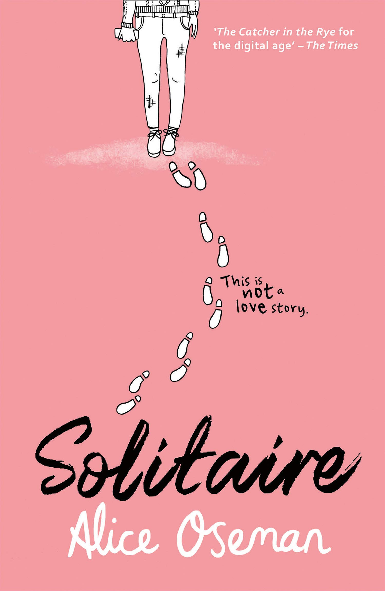In case you're wondering, this is not a love story.
My name is Tori Spring. I like to sleep and I like to blog. Last year - before all that stuff with Charlie and before I had to face the harsh realities of A-Levels and university applications and the fact that one day I really will have to start talking to people - I had friends. Things were very different, I guess, but that's all over now.
Now there's Solitaire. And Michael Holden.
I don't know what Solitaire are trying to do, and I don't care about Michael Holden.
I really don't.
Dumplin'
Dubbed “Dumplin'” by her former beauty queen mom, Willowdean has always been at home in her own skin. Her thoughts on having the ultimate bikini body? Put a bikini on your body. With her all-American beauty best friend, Ellen, by her side, things have always worked...until Will takes a job at Harpy's, the local fast-food joint. There she meets Private School Bo, a hot former jock. Will isn't surprised to find herself attracted to Bo. But she is surprised when he seems to like her back.
Instead of finding new heights of self-assurance in her relationship with Bo, Will starts to doubt herself. So she sets out to take back her confidence by doing the most horrifying thing she can imagine: entering the Miss Clover City beauty pageant—along with several other unlikely candidates—to show the world that she deserves to be up there as much as any girl does. Along the way, she'll shock the hell out of Clover City—and maybe herself most of all.
The Complete Tales of Winnie-the-Pooh
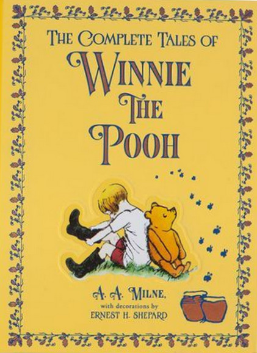In 1926, "Winnie-the-Pooh," a collection of stories about a rather stout, somewhat confused bear, was published in England and America. The enchanting tales of Pooh, Piglet, Eeyore, Christopher Robin, and the others were an immediate success, and firmly established A.A. Milne, already an acclaimed dramatist, as a major author of children's books. "Winnie-the-Pooh" was followed in 1928 by a second collection, "The House At Pooh Corner," which continued the adventures from the Hundred Acre Wood and introduced bouncy, lovable Tigger.
#Murdertrending

@doctorfusionbebop: Some 17 y.o. chick named Dee Guerrera was just sent to Alcatraz 2.0 for killing her stepsister. So, how long do you think she'll last?
@morrisdavis72195: I hope she meets justice! She'll get what's coming to her! BWAHAHA!
@EltonJohnForevzz: Me? I think Dee's innocent. And I hope she can survive.
#MurderFunding
WELCOME TO WHO WANTS TO BE A PAINIAC?, the latest reality TV show on the hunt for the next big-hit serial killer. But don't worry-no one is actually going to murder anyone, as real as the fake gore and pretend murder may appear... uh, right?
Seventeen-year-old Becca Martinello is about to find out. When her perfectly normal soccer mom dies in a car crash, a strange girl named Stef appears and lets Becca know that her deceased mom was none other than one of Alcatraz 2.0's most popular serial killers-Molly Mauler. Soon, Becca ends up on Who Wants to Be a Painiac? to learn the truth about her mom's connection to Molly Mauler, but things turn sinister when people are murdered IRL. Will Becca uncover dark secrets and make it out of the deadly reality show alive? Or will she get cut?
#NoEscape
Escape rooms are all fun and games...until the contestants start dying gruesome deaths.
Seventeen-year-old Persey feels worthless much of the time. Her parents prefer her smarter, more enigmatic big brother to her, and she can't quite seem to succeed-let alone fit in-at school. But there is one thing she's good at: escape rooms. So when she's invited to compete in an escape room competition that carries a prize worth millions, Persey is all over it.
Persey enters the competition along with seven other young contestants, but while most escape rooms are about teamwork and collaboration, this one is all about being cut-throat-literally. When contestants start getting killed off, Persey must solve a series of bizarre and gruesome puzzles, riddles, and games to make it out alive. Along the way she learns the contestants are mysteriously connected-and someone is out for vengeance.
Twenty years before Dee Guerra and the Death Row Breakfast Club took down The Postman and Alcatraz 2.0 in #MurderTrending, long before Becca survived The Juggernaut and Who Wants to Be a Painiac? in #MurderFunding, the murder games first began with one awful day at Escape-Capades, Ltd.? And there's no telling who might have made it out alive, or what they may have later become.
The Bad Beginning
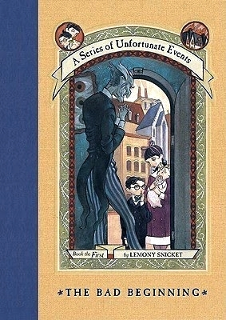Dear Reader,
I'm sorry to say that the book you are holding in your hands is extremely unpleasant. It tells an unhappy tale about three very unlucky children. Even though they are charming and clever, the Baudelaire siblings lead lives filled with misery and woe. From the very first page of this book when the children are at the beach and receive terrible news, continuing on through the entire story, disaster lurks at their heels. One might say they are magnets for misfortune.
In this short book alone, the three youngsters encounter a greedy and repulsive villain, itchy clothing, a disastrous fire, a plot to steal their fortune, and cold porridge for breakfast.
It is my sad duty to write down these unpleasant tales, but there is nothing stopping you from putting this book down at once and reading something happy, if you prefer that sort of thing.
With all due respect,
Lemony Snicket
The Reptile Room

Dear Reader,
If you have picked up this book with the hope of finding a simple and cheery tale, I'm afraid you have picked up the wrong book altogether. The story may seem cheery at first, when the Baudelaire children spend time in the company of some interesting reptiles and a giddy uncle, but don't be fooled. If you know anything at all about the unlucky Baudelaire children, you already know that even pleasant events lead down the same road to misery.
In fact, within the pages you now hold in your hands, the three siblings endure a car accident, a terrible odor, a deadly serpent, a long knife, a large brass reading lamp, and the appearance of a person they'd hoped never to see again.
I am bound to record these tragic events, but you are free to put this book back on the shelf and seek something lighter.
With all due respect,
Lemony Snicket
The Wide Window

Dear Reader,
If you have not read anything about the Baudelaire orphans, then before you read even one more sentence, you should know this: Violet, Klaus, and Sunny are kindhearted and quick-witted; but their lives, I am sorry to say, are filled with bad luck and misery. All of the stories about these three children are unhappy and wretched, and this one may be the worst of them all. If you haven't got the stomach for a story that includes a hurricane, a signalling device, hungry leeches, cold cucumber soup, a horrible villain, and a doll named Pretty Penny, then this book will probably fill you with despair. I will continue to record these tragic tales, for that is what I do. You, however, should decide for yourself whether you can possibly endure this miserable story.
With all due respect,
Lemony Snicket
The Miserable Mill
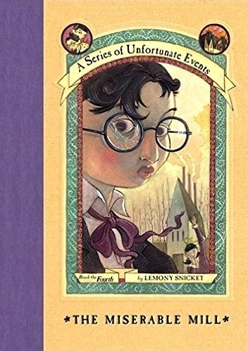Dear Reader,
I hope, for your sake, that you have not chosen to read this book because you are in the mood for a pleasant experience. If this is the case, I advise you to put this book down instantaneously, because of all the books describing the unhappy lives of the Baudelaire orphans, THE MISERABLE MILL might be the unhappiest yet. Violet, Klaus, and Sunny Baudelaire are sent to Paltryville to work in a lumbermill, and they find disaster and misfortune lurking behind every log.
The pages of this book, I'm sorry to inform you, contain such unpleasantries as a giant pincher machine, a bad casserole, a man with a cloud of smoke where his head should be, a hypnotist, a terrible accident resulting in injury, and coupons.
I have promised to write down the entire story of these three poor children, but you haven't, so if you prefer stories that are more heartwarming, please feel free to make another selection.
With all due respect,
Lemony Snicket
The Austere Academy
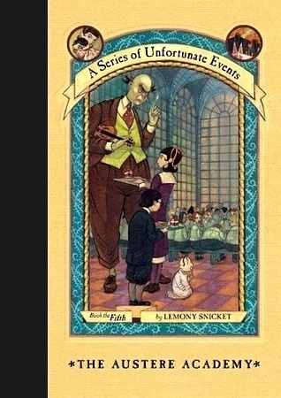Dear Reader,
If you are looking for a story about cheerful youngsters spending a jolly time at boarding school, look elsewhere. Violet, Klaus, and Sunny Baudelaire are intelligent and resourceful children, and you might expect that they would do very well at school. Don't. For the Baudelaires, school turns out to be another miserable episode in their unlucky lives.
Truth be told, within the chapters that make up this dreadful story, the children will face snapping crabs, strict punishments, dripping fungus, comprehensive exams, violin recitals, S.O.R.E., and the metric system.
It is my solemn duty to stay up all night researching and writing the history of these three hapless youngsters, but you may be more comfortable getting a good night's sleep. In that case, you should probably choose some other book.
With all due respect,
Lemony Snicket
The Ersatz Elevator
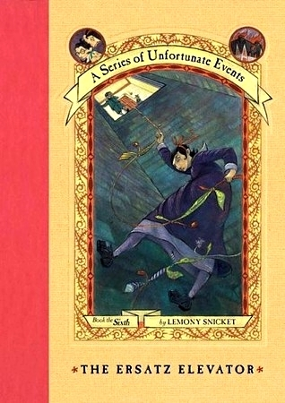Dear Reader,
If you have just picked up this book, then it is not too late to put it back down. Like the previous books in A Series of Unfortunate Events, there is nothing to be found in these pages but misery, despair, and discomfort, and you still have time to choose something else to read.
Within the chapters of this story, Violet, Klaus, and Sunny Baudelaire encounter a darkened staircase, a red herring, some friends in a dire situation, three mysterious initials, a liar with an evil scheme, a secret passageway, and parsley soda.
I have sworn to write down these tales of the Baudelaire orphans so the general public will know each terrible thing that has happened to them, but if you decide to read something else instead, you will save yourself from a helpful of horror and woe.
With all due respect,
Lemony Snicket
The Vile Village
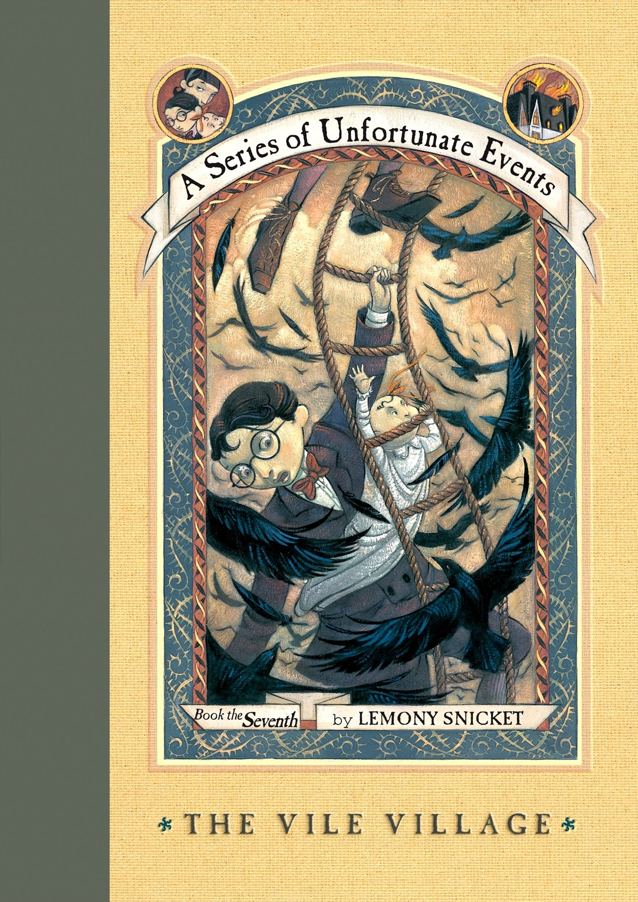Dear Reader,
You have undoubtedly picked up this book by mistake, so please put it down. Nobody in their right mind would read this particular book about the lives of Violet, Klaus, and Sunny Baudelaire on purpose, because each dismal moment of their stay in the village of V.F.D. has been faithfully and dreadfully recorded in these pages. I can think of no single reason why anyone would want to open a book containing such unpleasant matters as migrating crows, an angry mob, a newspaper headline, the arrest of innocent people, the Deluxe Cell, and some very strange hats. It is my solemn and sacred occupation to research each detail of the Baudelaire children's lives and write them all down, but you may prefer to do some other solemn and sacred thing, such as reading another book instead.
With all due respect,
Lemony Snicket
The Hostile Hospital

Dear Reader,
Before you throw this awful book to the ground and run as far away from it as possible, you should probably know why. This book is the only one which describes every last detail of the Baudelaire children's miserable stay at Heimlich Hospital, which makes it one of the most dreadful books in the world.
There are many pleasant things to read about, but this book contains none of them. Within its pages are such burdensome details as a suspicious shopkeeper, unnecessary surgery, an intercom system, anaesthesia, heart-shaped balloons, and some very startling news about a fire. Clearly you do not want to read about such things.
I have sworn to research this story, and to write it down as best I can, so I should know that this book is something best left on the ground, where you undoubtedly found it.
With all due respect,
Lemony Snicket
The Carnivorous Carnival

Dear reader,
The word "carnivorous," which appears in the title of this book, means "meat-eating," and once you have read such a bloodthirsty word, there is no reason to read any further. This carnivorous volume contains such a distressing story that consuming any of its contents would be far more stomach-turning than even the most imbalanced meal.
To avoid causing discomfort, it would be best if I didn't mention any of the unnerving ingredients of this story, particularly a confusing map, an ambidextrous person, an unruly crowd, a wooden plank, and Chabo the Wolf Baby.
Sadly for me, my time is filled with researching and recording the displeasing and disenchanting lives of the Baudelaire orphans. But your time might be better filled with something more palatable, such as eating your vegetables, or feeding them to someone else.
With all due respect,
Lemony Snicket
The Slippery Slope

Dear Reader,
Like handshakes, house pets, or raw carrots, many things are preferable when not slippery. Unfortunately, in this miserable volume, I am afraid that Violet, Klaus, and Sunny Baudelaire run into more than their fair share of slipperiness during their harrowing journey up--and down--a range of strange and distressing mountains.
In order to spare you any further repulsion, it would be best not to mention any of the unpleasant details of this story, particularly a secret message, a toboggan, a deceitful map, a swarm of snow gnats, a scheming villain, a troupe of organized youngsters, a covered casserole dish, and a surprising survivor of a terrible fire.
Unfortunately, I have dedicated my life to researching and recording the sad tale of the Baudelaire orphans. There is no reason for you to dedicate your-self to such things, and you might instead dedicate yourself to letting this slippery book slip from your hands into a nearby trash receptacle, or deep pit.
With all due respect,
Lemony Snicket
The Grim Grotto

Dear Reader,
Unless you are a slug, a sea anemone, or mildew, you probably prefer not to be damp. You might also prefer not to read this book, in which the Baudelaire siblings encounter an unpleasant amount of dampness as they descend into the depths of despair, underwater.
In fact, the horrors they encounter are too numerous to list, and you wouldn't want me even to mention the worst of it, which includes mushrooms, a desperate search for something lost, a mechanical monster, a distressing message from a lost friend, and tap dancing.
As a dedicated author who has pledged to keep recording the depressing story of the Baudelaires, I must continue to delve deep into the cavernous depths of the orphans' lives. You, on the other hand, may delve into some happier book in order to keep your eyes and your spirits from being dampened.
With all due respect,
Lemony Snicket
The Penultimate Peril

Dear Reader,
If this is the first book you found while searching for a book to read next, then the first thing you should know is that this next-to-last book is what you should put down first. Sadly, this book presents the next-to-last chronicle of the lives of the Baudelaire orphans, and it is next-to-first in its supply of misery, despair, and unpleasantness.
Probably the next-to-last thing you would like to read about are a harpoon gun, a rooftop sunbathing salon, two mysterious initials, three unidentified triplets, a notorious villain, and an unsavory curry.
Next-to-last things are the first thing to be avoided, and so allow me to recommend that you put this next-to-last book down first, and find something else to read next at last, such as the next-to-last book in another chronicle, or a chronicle containing other next-to-last things, so that this next-to-last book does not become the last book you will read.
With all due respect,
Lemony Snicket
The End

The last volume of the fabulously popular A Series of Unfortunate Events series, in which the history of the Baudelaire orphans is brought to its end.
You are presumably looking at the back of this book, or the end of the end. The end of the end is the best place to begin the end, because if you read the end from the beginning of the beginning of the end to the end of the end of the end, you will arrive at the end of the end of your rope.
This book is the last in A Series of Unfortunate Events, and even if you braved the previous twelve volumes, you probably can't stand such unpleasantries as a fearsome storm, a suspicious beverage, a herd of wild sheep, an enormous bird cage, and a truly haunting secret about the Baudelaire parents.
It has been my solemn occupation to complete the history of the Baudelaire orphans, and at last I am finished. You likely have some other occupation, so if I were you I would drop this book at once, so the end does not finish you.
With all due respect,
Lemony Snicket
Psychology: Adventures In The Human Mind
Psychology: Adventures in the Human Mind delves deep into the human consciousness and casts light onto the hidden reasons why we feel, think and behave the way we do. Packed with illuminating real-life examples, introductions to groundbreaking psychologists, and plenty of experiments and tests to unveil the way your own mind works.
Divided into eight fascinating chapters, it covers everything from the real reasons we fall in love to the science behind a good night's sleep. From extreme disorders to the truth behind the ways we live our everyday lives, Psychology: Adventures in the Human Mind takes you on a journey through the amazing landscape of the mind
Essentials of Psychology
What do dreams mean? How important is childhood, really? Why do we forget this--and remember that? There's nothing more fascinating--or frightening--than the ins and outs of the human mind. But understanding the complex links between our brains, our emotions, and our behavior can be challenging. This book unravels even the most arcane mysteries of psychology, including: The human drive for food, sex, and other desires What happens when thinking and emotions go awry Why we fall in love with one person and not another How we can develop a strong sense of self When traumatic events can change who we are Scientific information is coupled with real-life examples to help you grasp the basic principles and theories of psychology. With The Essentials of Psychology, you'll be able to achieve a better understanding of yourself--and everyone else around you, too!
30-Second Psychology
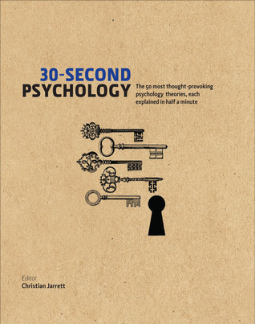Pavlov's Dogs, Psychoanalysis, Milgram's Obedience Study, and Beck's Cognitive Therapy? Sure, you know what they all mean (that is, you've certainly heard of them), but do you understand enough about these psychology theories to join a dinner party debate or dazzle the bar with your knowledge?
30-Second Psychology takes the top 50 strands of thinking in this fascinating field, and explains them to the general reader in half a minute, using nothing more than two pages, 300 words, and one picture. While unraveling the inner workings of the human mind it also introduces many of the luminaries in the field along the way, including William James, Aaron Beck, and (of course) Sigmund Freud. From Behaviorism to Cognitivism, what better way to get a handle on your inner demons?
Código ético del psicólogo
Los principios y las normas sobre el ejercicio profesional, científico y académico del psicólogo, que contempla este código, se proponen guiarlo en su práctica cotidiana no sólo para regular sus relaciones con clientes, colegas, empleados, participantes en investigaciones y público en general, sino también para dar una imagen más seria y respetable de la psicología como profesión y disciplina científica.
A esta nueva versión del Código ético del psicólogo se añaden dos estudios realizados por el Consejo Nacional para la Enseñanza e Investigación en Psicología (CNEIP) y encabezados por el doctor Juan Lafarga Corona: el primero es sobre los valores éticos que los psicólogos mexicanos juzgan promover en el ejercicio de su profesión, y el segundo una actualización de algunos enunciados del Código, la cual contribuye a una mejor comprensión del mismo por parte de estudiantes y profesionales.
The Heartstopper Yearbook
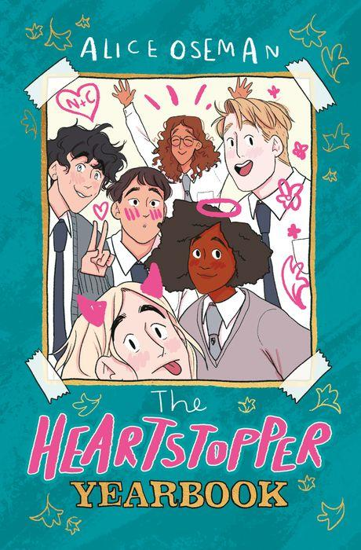The Heartstopper Yearbook is packed full of exclusive content from the Heartstopper universe: never-before-seen illustrations, an exclusive minicomic, character profiles, trivia, and insights into Alice Oseman's creative process, narrated by a cartoon version of Alice herself. In full-color for the first time, this companion book is perfect for fans of Heartstopper!
How It Feels to Float
Biz knows how to float. She has her people, her posse, her mom and the twins. She has Grace. And she has her dad, who tells her about the little kid she was, and who shouldn't be here but is. So Biz doesn't tell anyone anything. Not about her dark, runaway thoughts, not about kissing Grace or noticing Jasper, the new boy. And she doesn't tell anyone about her dad. Because her dad died when she was seven. And Biz knows how to float, right there on the surface--normal okay regular fine.
But after what happens on the beach--first in the ocean, and then in the sand--the tethers that hold Biz steady come undone. Dad disappears and, with him, all comfort. It might be easier, better, sweeter to float all the way away? Or maybe stay a little longer, find her father, bring him back to her. Or maybe--maybe maybe maybe--there's a third way Biz just can't see yet.
Once Upon a Dream
What if the sleeping beauty never woke up?
It should be simple—a dragon defeated, a slumbering princess in a castle, a prince poised to wake her. But when the prince falls asleep as his lips touch the fair maiden's, it is clear that this fairy tale is far from over.
With a desperate fairy's last curse controlling her mind, Princess Aurora must escape from a different castle of thorns and navigate a dangerously magical landscape—created from her very own dreams.
Aurora isn't alone—a charming prince is eager to join her quest, and old friends offer their help. But as Maleficent's agents follow her every move, Aurora must discover who her true allies are and, moreover, who she truly is.
Time is running out. Will the sleeping beauty be able to wake herself up?
A Whole New World
What if Aladdin had never found the lamp?
Aladdin is a Street Rat. Like most, he's just trying to survive another day in impoverished Agrabah.
Jasmine is a princess, one who is about to enter into an arranged marriage. All she wants is to escape her fate, to see what lies beyond the palace walls.
But everything changes when the sultan's trusted adviser, Jafar, suddenly rises to power. With the help of an ancient lamp, Jafar attempts to break the laws of magic and gain control over love and death. Soon Aladdin and the deposed princess Jasmine must unite the people of Agrabah in rebellion to stop the power-mad ruler threatening to tear the kingdom apart.
This isn't the story you already know. This is a story about power. About revolutionaries. About love. And about one moment changing everything.
As Old As Time
When Belle touches the Beast's enchanted rose, memories flood through Belle's mind—memories of a mother she thought she would never see again. And, stranger still, she sees that her mother is none other than the beautiful enchantress who cursed the castle and all its inhabitants. Shocked and confused, Belle and the Beast will have to unravel a dark mystery about their families that is 21 years in the making.
The First to Die at the End
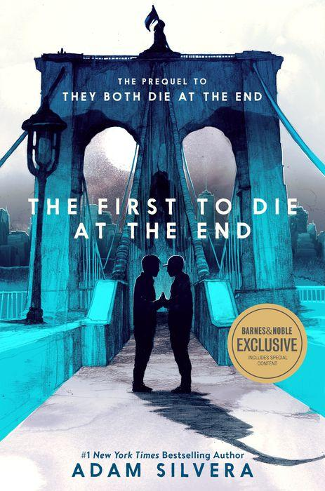It's the night before Death-Cast goes live, and there's one question on everyone's mind: Can Death-Cast actually predict when someone will die, or is it just an elaborate hoax?
Orion Pagan has waited years for someone to tell him that he's going to die. He has a serious heart condition, and he signed up for Death-Cast so he could know what's coming.
Valentino Prince is restarting his life in New York. He has a long and promising future ahead and he only registered for Death-Cast after his twin sister nearly died in a car accident.
Orion and Valentino cross paths in Times Square and immediately feel a deep connection. But when the first round of End Day calls goes out, their lives are changed forever—one of them receives a call, and the other doesn't. Though neither boy is certain how the day will end, they know they want to spend it together…even if that means their goodbye will be heartbreaking.
The pony party
Lemony Snicket: The Unauthorized Autobiography
A Warning from the Publisher:
Many readers have questions about Lemony Snicket, author of the distressing serial concerning the trials of the charming but unlucky Baudelaire orphans, published under the collective title A Series of Unfortunate Events. Before purchasing, borrowing, or stealing this book, you should be aware that it contains the answers to some of those questions, such as the following:
1. Who is Lemony?
2. Is there a secret organization I should know about?
3. Why does Lemony Snicket spend his time researching and writing distressing books concerning the Baudelaire orphans?
4. Why do all of Lemony Snicket's books contain a sad dedication to a woman named Beatrice?
5. If there's nothing out there, what was that noise?
Our advice to you is that you find a book that answers less upsetting questions than this one. Perhaps your librarian, bookseller, or parole officer can recommend a book that answers the question, "Aren't ponies adorable?"
The Priory of the Orange Tree
A world divided.
A queendom without an heir.
An ancient enemy awakens.
The House of Berethnet has ruled Inys for a thousand years.
Still unwed, Queen Sabran the Ninth must conceive a daughter to ensure the continuation of her bloodline. But as she clings to her independence, assassins are getting closer to her door.
Ead Duryan is an outsider at court. Though she has converted to the Six Virtues and risen to the position of lady-in-waiting, she will never be truly at home in Inys. As she dutifully goes to the sanctuary each day, Ead keeps a watchful eye on the queen, protecting her with forbidden magic.
Yet even she cannot keep Sabran from harm indefinitely. Dragons are encroaching on Inysh lands for the first time in centuries, the divided East and West refuse to parley, and an age-old force is stirring that no mandate can keep at bay.
The House in the Cerulean Sea
Linus Baker is a by-the-book case worker in the Department in Charge of Magical Youth. He's tasked with determining whether six dangerous magical children are likely to bring about the end of the world.
Arthur Parnassus is the master of the orphanage. He would do anything to keep the children safe, even if it means the world will burn. And his secrets will come to light.
The House in the Cerulean Sea is an enchanting love story, masterfully told, about the profound experience of discovering an unlikely family in an unexpected place—and realizing that family is yours.
Under the Whispering Door
Welcome to Charon's Crossing.
The tea is hot, the scones are fresh, and the dead are just passing through.
When a reaper comes to collect Wallace from his own funeral, Wallace begins to suspect he might be dead.
And when Hugo, the owner of a peculiar tea shop, promises to help him cross over, Wallace decides he's definitely dead.
But even in death he's not ready to abandon the life he barely lived, so when Wallace is given one week to cross over, he sets about living a lifetime in seven days.
Hilarious, haunting, and kind, Under the Whispering Door is an uplifting story about a life spent at the office and a death spent building a home.
The Women of Troy
Troy has fallen and the victorious Greeks are eager to return home with the spoils of an endless war—including the women of Troy themselves. They await a fair wind for the Aegean.
It does not come, because the gods are offended. The body of King Priam lies unburied and desecrated, and so the victors remain in suspension, camped in the shadows of the city they destroyed as the coalition that held them together begins to unravel. Old feuds resurface and new suspicions and rivalries begin to fester.
Largely unnoticed by her captors, the one time Trojan queen Briseis, formerly Achilles's slave, now belonging to his companion Alcimus, quietly takes in these developments. She forges alliances when she can, with Priam's aged wife the defiant Hecuba and with the disgraced soothsayer Calchas, all the while shrewdly seeking her path to revenge.
The School for Good and Evil
The first kidnappings happened two hundred years before. Some years it was two boys taken, some years two girls, sometimes one of each. But if at first the choices seemed random, soon the pattern became clear. One was always beautiful and good, the child every parent wanted as their own. The other was homely and odd, an outcast from birth. An opposing pair, plucked from youth and spirited away.
This year, best friends Sophie and Agatha are about to discover where all the lost children go: the fabled School for Good & Evil, where ordinary boys and girls are trained to be fairy tale heroes and villains. As the most beautiful girl in Gavaldon, Sophie has dreamed of being kidnapped into an enchanted world her whole life. With her pink dresses, glass slippers, and devotion to good deeds, she knows she'll earn top marks at the School for Good and graduate a storybook princess. Meanwhile Agatha, with her shapeless black frocks, wicked pet cat, and dislike of nearly everyone, seems a natural fit for the School for Evil.
But when the two girls are swept into the Endless Woods, they find their fortunes reversed—Sophie's dumped in the School for Evil to take Uglification, Death Curses, and Henchmen Training, while Agatha finds herself in the School For Good, thrust amongst handsome princes and fair maidens for classes in Princess Etiquette and Animal Communication. But what if the mistake is actually the first clue to discovering who Sophie and Agatha really are…?
A World Without Princes
After saving themselves and their fellow students from a life pitched against one another, Sophie and Agatha are back home again, living happily ever after. But life isn't exactly a fairytale. When Agatha secretly wishes she'd chosen a different happy ending with Prince Tedros, the gates to the School for Good and Evil open once again. But Good and Evil are no longer enemies and Princes and Princesses may not be what they seem, as new bonds form and old ones shatter.
The Last Ever After
In the stunning conclusion to the New York Times bestselling School for Good and Evil trilogy, everything old is new again, as Sophie and Agatha fight the past as well as the present to find the perfect end to their fairy tale. Former best friends Sophie and Agatha thought their ending was sealed when they went their separate ways, but their storybook is about to be rewrittenand this time theirs isn't the only one. With the girls apart, Evil has taken over and the forces of Good are in deathly peril. Will Agatha and Sophie be able to work together to save them? Will they find their way to being friends again? And will their new ending be the last Ever After they've been searching for?Soman Chainani delivers action, adventure, laughter, romance, and more twists than ever before in this extraordinary end to his epic series.
The Obsession

A classic sort of love story... except somebody might wind up dead.
Nobody knows Delilah like Logan does. Nobody. He makes sure of it by learning everything he can through her social media and watching her through a hidden camera he has trained on her house. Some might call him a stalker. Logan prefers to be called “romantic.”
But after Logan sees Delilah killing her abusive stepfather, he realizes there's still more about her to discover. His sweet, perfect Delilah isn't so perfect after all.
Delilah knows she should feel guilty, but all she feels is free. She's so over the men in her life controlling her. Except Logan saw what she did, and he won't let her forget it.
Delilah is done being the victim. And she refuses to be a character in Logan's twisted fantasy. If Logan won't let her go… she'll make him.
Authentic: A Memoir by the Founder of Vans
In the tradition of bestsellers such as Shoe Dog, Authentic is a surprisingly candid, compelling memoir by a high school dropout who went on to establish one of the world's most iconic brands.
Read People: Understand behaviour. Expertly communicate: 20 thought-provoking lessons
Can you spot a lie?
Using a unique, visual approach to explore the science of behaviour, Read People shows how understanding why people act in certain ways will make you more adept at communication, more persuasive and a better judge of the motivations of others.
The increasing speed of communication in the modern world makes it more important than ever to understand the subtle behaviours behind everyday interactions. In 20 dip-in lessons, Rita Carter translates the signs that reveal a person's true feelings and intentions and exposes how these signals drive relationships, crowds and even society's behaviour. Learn the influencing tools used by leaders and recognise the fundamental patterns of behaviour that shape how we act and how we communicate.
Y colorín colorado, este cuento aún no se ha acabado
Y colorín colorado este cuento aún no se ha acabado relata la historia de Odái. una princesa que vive encerrada en la torre de un castillo. custodiada por el Dragón Negro del Miedo. En espera de que llegue una señal que la conduzca a encontrar el nuevo rumbo de su vida. Odái no se atreve a salir. pero. cansada de esperar y al descubrir que no llega la señal. decide por fin salirse de la trama del cuento. desprenderse de la narración del escritor y emprender su propia aventura personal en busca de la felicidad... Y colorín colorado este cuento aún no se ha acabado habla de los miedos que nos paralizan. del deseo de ser libres y de la importancia de conocernos a nosotros mismos. Es una historia que nos invita a indagar en nuestro pasado para entender quiénes somos y de dónde venimos para decidir hacia dónde vamos... Esta edición especial de XX años. incluye una historia adicional donde Odin Dupeyron narra la crónica de este libro que. como Odái. ha tenido que ir adquiriendo nuevas experiencias y venciendo múltiples obstáculos. para alcanzar su propio éxito.
No Longer Human
Osamu Dazai's No Longer Human, this leading postwar Japanese writer's second novel, tells the poignant and fascinating story of a young man who is caught between the breakup of the traditions of a northern Japanese aristocratic family and the impact of Western ideas. In consequence, he feels himself "disqualified from being human" (a literal translation of the Japanese title).
Donald Keene, who translated this and Dazai's first novel, The Setting Sun, has said of the author's work: "His world … suggests Chekhov or possibly postwar France, … but there is a Japanese sensibility in the choice and presentation of the material. A Dazai novel is at once immediately intelligible in Western terms and quite unlike any Western book." His writing is in some ways reminiscent of Rimbaud, while he himself has often been called a forerunner of Yukio Mishima.
El arte de amar
El arte de amar es una obra con la que Erich Fromm ha ayudado a varias generaciones a reflexionar sobre el amor y a responder a algunas preguntas aparentemente sencillas: ¿Qué significa amar? ¿Cómo desprendernos de nosotros mismos para experimentar este sentimiento? El amor no es solo una relación personal, es un rasgo de madurez que se manifiesta en diversas formas: amor erótico, amor fraternal, amor filial, amor a uno mismo... El amor no es algo pasajero y mecánico, como a veces nos induce a creer la sociedad de hoy. Muy al contrario, el amor es un arte, el fruto de un aprendizaje. Por ello, si queremos aprender a amar, debemos actuar como lo haríamos si quisiéramos aprender cualquier otro arte, ya sea música, pintura, carpintería o el arte de la medicina. O, por lo menos, no dedicar nuestra energía a buscar éxito y dinero, prestigio y poder, sino a cultivar el verdadero arte de amar.
What Not to Say: A Compendium of the Worst Possible Things You Can Utter Aloud
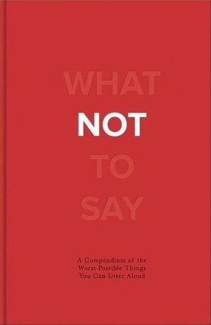Stay away from awkward exchanges and consult this clever compendium for things you should never, ever say. Learn what not to say at a job interview (“How strict is your sexual-harassment policy?”), what not to say to a cat lady (“Dogs are so much friendlier!”), and what not to say to anyone else you don't want to offend (“Don't take this personally, but...”).
milk and honey
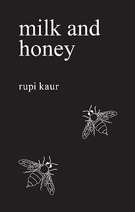Milk and Honey is a collection of poetry and prose about survival. About the experience of violence, abuse, love, loss, and femininity.
It is split into four chapters, with each chapter dealing with a different pain. Healing a different heartache. Milk and Honey takes readers through a journey of the most bitter moments in life and finds sweetness in them -- because there is sweetness everywhere if you are just willing to look.
Solo
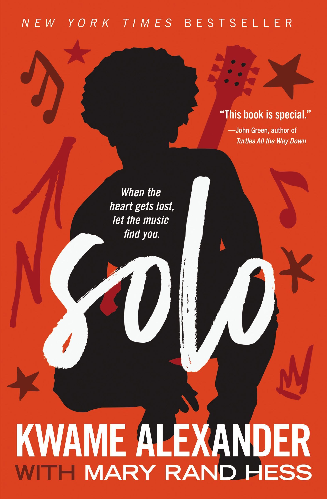Through the story of a young Black man searching for answers about his life, Solo empowers, engages, and encourages teenagers to move from heartache to healing, burden to blessings, depression to deliverance, and trials to triumphs . Blade never asked for a life of the rich and famous. In fact, he'd give anything not to be the son of Rutherford Morrison, a washed-up rock star and drug addict with delusions of a comeback. Or to no longer be part of a family known most for lost potential, failure, and tragedy, including the loss of his mother. The one true light is his girlfriend, Chapel, but her parents have forbidden their relationship, assuming Blade will become just like his father. In reality, the only thing Blade and Rutherford have in common is the music that lives inside them. And songwriting is all Blade has left after Rutherford, while drunk, crashes his high school graduation speech and effectively rips Chapel away forever. But when a long-held family secret comes to light, the music disappears. In its place is a letter, one that could bring Blade the freedom and love he's been searching for, or leave him feeling even more adrift.
The Boy, the Mole, the Fox and the Horse
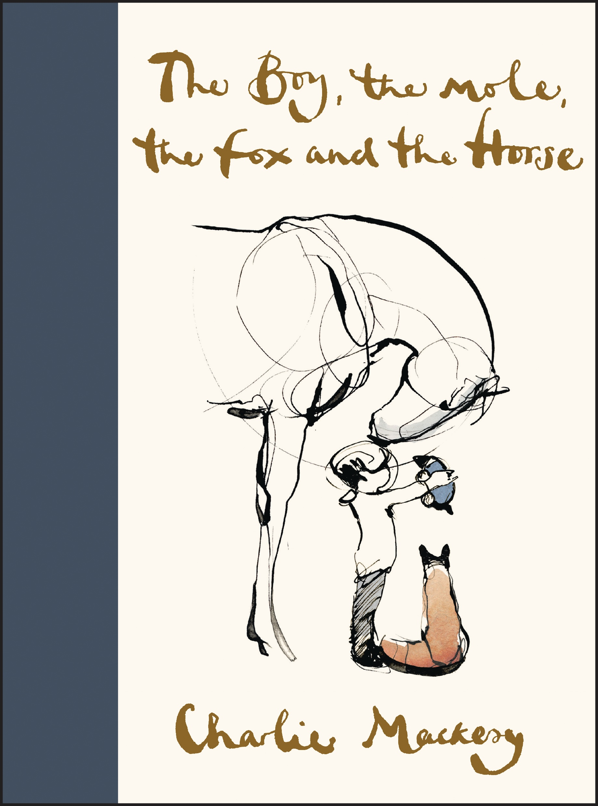“What do you want to be when you grow up?” asked the mole.
“Kind,” said the boy.
Charlie Mackesy offers inspiration and hope in uncertain times in this beautiful book based on his famous quartet of characters. The Boy, the Mole, the Fox, and the Horse explores their unlikely friendship and the poignant, universal lessons they learn together.
Home Body

i dive into the well of my body
and end up in another world
everything i need
already exists in me
there's no need
to look anywhere else
- home
Aristotle and Dante Dive into the Waters of the World
In Aristotle and Dante Discover the Secrets of the Universe, two boys in a border town fell in love. Now, they must discover what it means to stay in love and build a relationship in a world that seems to challenge their very existence.
Ari has spent all of high school burying who he really is, staying silent and invisible. He expected his senior year to be the same. But something in him cracked open when he fell in love with Dante, and he can't go back. Suddenly he finds himself reaching out to new friends, standing up to bullies of all kinds, and making his voice heard. And, always, there is Dante, dreamy, witty Dante, who can get on Ari's nerves and fill him with desire all at once.
The boys are determined to forge a path for themselves in a world that doesn't understand them. But when Ari is faced with a shocking loss, he'll have to fight like never before to create a life that is truthfully, joyfully his own.
The sun and her flowers

A vibrant and transcendent journey about growth and healing. Ancestry and honoring one's roots. Expatriation and rising up to find a home within yourself. Divided into five chapters and illustrated by Kaur, the sun and her flowers is a journey of wilting, falling, rooting, rising, and blooming. A celebration of love in all its forms. this is the recipe of life said my mother as she held me in her arms as i wept think of those flowers you plant in the garden each year they will teach you that people too must wilt fall root rise in order to bloom
The Son of Neptune
PERCY IS CONFUSED. When he awoke from his long sleep, he didn't know much more than his name. His brain fuzz is lingering, even after the wolf Lupa told him he is a demigod and trained him to fight with the pen/sword in his pocket. Somehow Percy manages to make it to a camp for half-bloods, despite the fact that he has to keep killing monsters along the way. But the camp doesn't ring any bells with him. The only thing he can recall from his past is another name: Annabeth.
HAZEL IS SUPPOSED TO BE DEAD. When she lived before, she didn't do a very good job of it. Sure, she was an obedient daughter, even when her mother was possessed by greed. But that was the problem—when the Voice took over her mother and commanded Hazel to use her "gift" for an evil purpose, Hazel couldn't say no. Now because of her mistake, the future of the world is at risk. Hazel wishes she could ride away from it all on the stallion that appears in her dreams.
FRANK IS A KLUTZ. His grandmother says he is descended from heroes and can be anything he wants to be, but he doesn't see it. He doesn't even know who his father is. He keeps hoping Apollo will claim him, because the only thing he is good at is archery—although not good enough to win camp war games. His bulky physique makes him feel like an ox, especially in front of Hazel, his closest friend at camp. He trusts her completely—enough to share the secret he holds close to his heart.
Beginning at the "other" camp for half-bloods and extending as far as the land beyond the gods, this breathtaking second installment of the Heroes of Olympus series introduces new demigods, revives fearsome monsters, and features other remarkable creatures, all destined to play a part in the Prophesy of Seven.
Harry Potter and the Sorcerer's Stone
Harry Potter has never been the star of a Quidditch team, scoring points while riding a broom far above the ground. He knows no spells, has never helped to hatch a dragon, and has never worn a cloak of invisibility. All he knows is a miserable life with the Dursleys, his horrible aunt and uncle, and their abominable son, Dudley - a great big swollen spoiled bully. Harry's room is a tiny closet at the foot of the stairs, and he hasn't had a birthday party in eleven years. But all that is about to change when a mysterious letter arrives by owl a letter with an invitation to an incredible place that Harry - and anyone who reads about him - will find unforgettable.
Harry Potter and the Chamber of Secrets

The Dursleys were so mean and hideous that summer that all Harry Potter wanted was to get back to the Hogwarts School for Witchcraft and Wizardry. But just as he's packing his bags, Harry receives a warning from a strange, impish creature named Dobby who says that if Harry Potter returns to Hogwarts, disaster will strike.
And strike it does. For in Harry's second year at Hogwarts, fresh torments and horrors arise, including an outrageously stuck-up new professor, Gilderoy Lockhart, a spirit named Moaning Myrtle who haunts the girls' bathroom, and the unwanted attentions of Ron Weasley's younger sister, Ginny.
Harry Potter and the Prisoner of Azkaban

For twelve long years, the dread fortress of Azkaban held an infamous prisoner named Sirius Black. Convicted of killing thirteen people with a single curse, he was said to be the heir apparent to the Dark Lord, Voldemort. Now he has escaped, leaving only two clues as to where he might be Harry Potter's defeat of You-Know-Who was Black's downfall as well. And the Azkaban guards heard Black muttering in his sleep, "He's at Hogwarts... he's at Hogwarts." Harry Potter isn't safe, not even within the walls of his magical school, surrounded by his friends. Because on top of it all, there may be a traitor in their midst.
Harry Potter and the Goblet of Fire
Harry wants to get away from the pernicious Dursleys and go to the International Quidditch Cup with Hermione, Ron, and the Weasleys. He wants to dream about Cho Chang, his crush (and maybe do more than dream). He wants to find out about the mysterious event involving two other rival schools of magic, and a competition that hasn't happened for a hundred years. He wants to be a normal, fourteen-year-old wizard. Unfortunately for Harry Potter, he's not normal - even by wizarding standards. And in this case, different can be deadly.
Harry Potter and the Order of the Phoenix

There is a door at the end of a silent corridor. And it's haunting Harry Potter's dreams. Why else would he be waking in the middle of the night, screaming in terror? It's not just the upcoming O.W.L. exams; a new teacher with a personality like poisoned honey; a venomous, disgruntled house-elf; or even the growing threat of He-Who-Must-Not-Be-Named. Now Harry Potter is faced with the unreliability of the very government of the magical world and the impotence of the authorities at Hogwarts. Despite this (or perhaps because of it), he finds depth and strength in his friends, beyond what even he knew; boundless loyalty; and unbearable sacrifice.
Harry Potter and the Half-Blood Prince
The war against Voldemort is not going well; even Muggle governments are noticing. Ron scans the obituary pages of the Daily Prophet, looking for familiar names. Dumbledore is absent from Hogwarts for long stretches of time, and the Order of the Phoenix has already suffered losses. And yet... As in all wars, life goes on. Sixth-year students learn to Apparate - and lose a few eyebrows in the process. The Weasley twins expand their business. Teenagers flirt and fight and fall in love. Classes are never straightforward, though Harry receives some extraordinary help from the mysterious Half-Blood Prince.
Harry Potter and the Deathly Hallows
We now present the seventh and final installment in the epic tale of Harry Potter.
Heartstopper: Volume Five
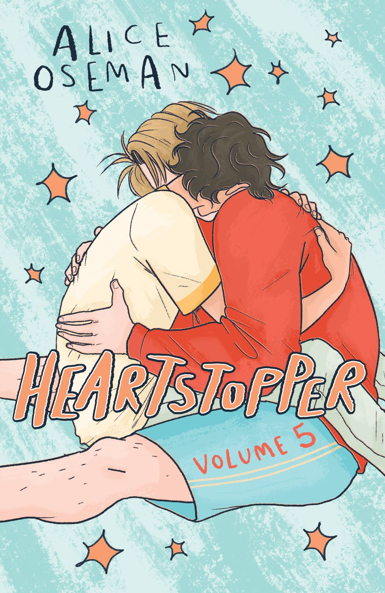Nick and Charlie are very much in love. They've finally said those three little words, and Charlie has almost persuaded his mum to let him sleep over at Nick's house... But with Nick going off to university next year, is everything about to change?
The 7 1/2 Deaths of Evelyn Hardcastle

Evelyn Hardcastle will be murdered at 11:00 p.m.
There are eight days, and eight witnesses for you to inhabit.
We will only let you escape once you tell us the name of the killer.
Understood? Then let's begin...
Evelyn Hardcastle will die. Every day until Aiden Bishop can identify her killer and break the cycle. But every time the day begins again, Aiden wakes up in the body of a different guest. And some of his hosts are more helpful than others...
The most inventive debut of the year twists together a mystery of such unexpected creativity it will leave listeners guessing until the very last second.
The Hexologists
The Hexologists, Iz and Warren Wilby, are quite accustomed to helping desperate clients with the bugbears of city life. Aided by hexes and a bag of charmed relics, the Wilbies have recovered children abducted by chimney-wraiths, removed infestations of barb-nosed incubi, and ventured into the Gray Plains of the Unmade to soothe a troubled ghost. Well-acquainted with the weird, they never shy away from a challenging case.
But when they are approached by the royal secretary and told the king pleads to be baked into a cake—going so far as to wedge himself inside a lit oven—the Wilbies soon find themselves embroiled in a mystery that could very well see the nation turned on its head. Their effort to expose a royal secret buried under forty years of lies brings them nose to nose with a violent anti-royalist gang, avaricious ghouls, alchemists who draw their power from a hell-like dimension, and a bookish dragon who only occasionally eats people.
Armed with a love toughened by adversity and a stick of chalk that can conjure light from the darkness, hope from the hopeless, Iz and Warren Wilby are ready for whatever springs from the alleys, graves, and shadows next.
White Cat, Black Dog: Stories
Finding seeds of inspiration in the stories of the Brothers Grimm, seventeenth-century French lore, and Scottish ballads, Kelly Link spins classic fairy tales into utterly original stories of seekers—characters on the hunt for love, connection, revenge, or their own sense of purpose.
In “The White Cat's Divorce,” an aging billionaire sends his three sons on a series of absurd goose chases to decide which child will become his heir. In “The Girl Who Did Not Know Fear,” a professor with a delicate health condition becomes stranded for days in an airport hotel after a conference, desperate to get home to her wife and young daughter, and in acute danger of being late for an appointment that cannot be missed. In “Skinder's Veil,” a young man agrees to take over a remote house-sitting gig for a friend. But what should be a chance to focus on his long-avoided dissertation instead becomes a wildly unexpected journey, as the house seems to be a portal for otherworldly travelers—or perhaps a door into his own mysterious psyche.
Twisting and turning in astonishing ways, expertly blending realism and the speculative, witty, empathetic, and never predictable—these stories remind us once again of why Kelly Link is incomparable in the realm of short fiction.
Everyone in My Family Has Killed Someone
Everyone in my family has killed someone. Some of us, the high achievers, have killed more than once. I'm not trying to be dramatic, but it is the truth. Some of us are good, others are bad, and some just unfortunate.
I'm Ernest Cunningham. Call me Ern or Ernie. I wish I'd killed whoever decided our family reunion should be at a ski resort, but it's a little more complicated than that.
Have I killed someone? Yes. I have.
Who was it?
Let's get started.
EVERYONE IN MY FAMILY HAS KILLED SOMEONE
My brother
My stepsister
My wife
My father
My mother
My sister-in-law
My uncle
My stepfather
My aunt
Me
Every Star That Falls
This much-anticipated sequel to the acclaimed fan-favorite novel Suicide Notes is a funny, touching look at what happens when you give up trying to be someone people want you to be and become exactly who you are. Jeff spent forty-five days in the psych ward of a hospital after a suicide attempt. Now that he's home and has accepted that he's gay, he's ready to reenter his life feeling stronger and more comfortable being his true self than ever before. But it's hard to come back to an old life when you have a new perspective on it. Returning to school is complicated, and his mother's anxiety isn't helping. Jeff will also have to figure out how to reconnect with his best friend, Allie, whose boyfriend he kissed before he went to the hospital. To make things even more complicated, a fellow patient from the ward suddenly appears at school, which brings up all kinds of mixed emotions for Jeff. Luckily, he's got new friends from a local community center for queer youths to help him through it all. And some may turn out to be more than just friends...
The Wonderful Story of Henry Sugar and Six More
Meet the boy who can talk to animals and the man who can see with his eyes closed. And find out about the treasure buried deep underground. A cleaver mix of fact and fiction, this collection also includes how master storyteller Roald Dahl became a writer. With Roald Dahl, you can never be sure where reality ends and fantasy begins.
A Court of Mist and Fury

Feyre has undergone more trials than one human woman can carry in her heart. Though she's now been granted the powers and lifespan of the High Fae, she is haunted by her time Under the Mountain and the terrible deeds she performed to save the lives of Tamlin and his people.
As her marriage to Tamlin approaches, Feyre's hollowness and nightmares consume her. She finds herself split into two different one who upholds her bargain with Rhysand, High Lord of the feared Night Court, and one who lives out her life in the Spring Court with Tamlin. While Feyre navigates a dark web of politics, passion, and dazzling power, a greater evil looms. She might just be the key to stopping it, but only if she can harness her harrowing gifts, heal her fractured soul, and decide how she wishes to shape her future-and the future of a world in turmoil.
The Painted Gun
It's 1997 at the dawn of the digital age in San Francisco. Ex-journalist and struggling alcoholic David "Itchy" Crane's fledgling "information consultancy" business is getting slowly buried by bad luck, bad decisions, and the growing presence of the Internet. Before Itchy can completely self-destruct, a crooked private investigator offers him fifty grand to find a missing girl named Ashley. Crane takes the job because the money's right and because the only clue to her disappearance is a dead-on oil portrait of Crane himself painted by the mysterious missing girl--whom he has never met.
As Crane's search for Ashley rapidly becomes an obsession, he stumbles upon a series of murders, gets slapped around by thugs and intimidated by cops, and begins to suspect he's being framed for the murders by a psychotic Guatemalan hit man. Left with no avenue but survival, Crane goes on the offensive, fighting to clear his name, solve the murders, and find the beguiling portrait artist Ashley, who may have a few surprises of her own.
The Bus Driver Who Wanted To Be God & Other Stories
Israel's hippest bestselling young writer today, Etgar Keret is part court jester, part literary crown prince, part national conscience. The Bus Driver Who Wanted to Be God gathers his daring and provocative short stories for the first time in English.
Brief, intense, painfully funny, and shockingly honest, Keret's stories are snapshots that illuminate with intelligence and wit the hidden truths of life. As with the best comic authors, hilarity and anguish are the twin pillars of his work. Keret covers a remarkable emotional and narrative terrain-from a father's first lesson to his boy to a standoff between soldiers caught in the Middle East conflict to a slice of life where nothing much happens.